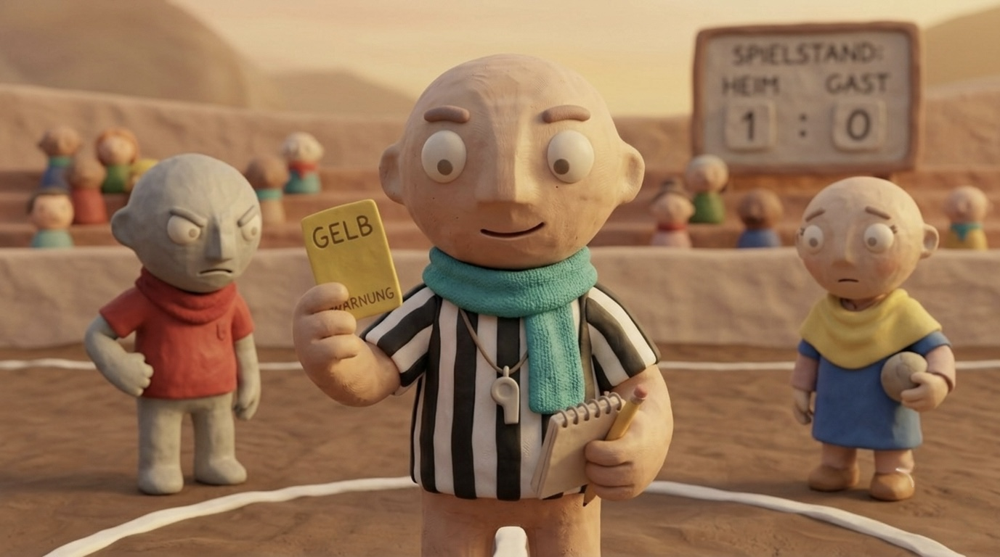
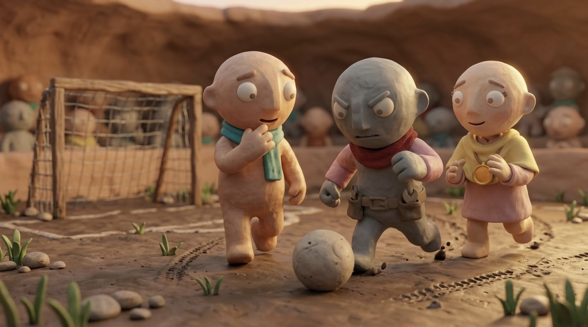
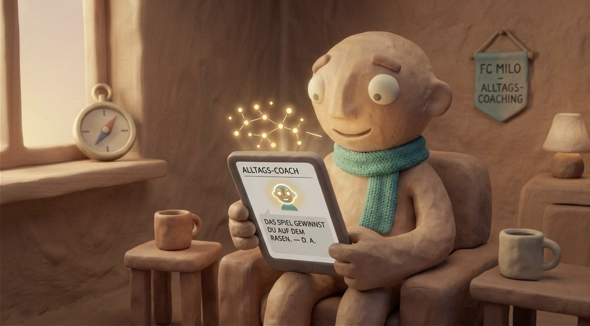

Echte Teams
×
Strength Hack.
Fünf Kapitel. Echte Wissenschaft. Ein Ziel: dein Team auf Hochleistung bringen — und dort halten.

Psychologische Sicherheit ist kein
Soft Skill.

Teammitglieder einladen.
Stärken skalieren —
nicht Schwächen reparieren.
Zwei Wege ins System.
Reibung in Performance verwandeln.
Nach Tuckmans Phasenmodell verlieren die meisten Teams wertvolle Monate im Storming und Norming. Der 6-dimensionale Matching-Kompass macht kognitive Overlaps und blinde Flecken sofort visuell sichtbar — Konflikte werden objektiviert und entpersonalisiert.
Canvas befüllen. Kompass lesen.
Coaching im Alltag —
nicht nur in der Kabine.

Direkt fragen. Profil-basiert antworten.
Sichtbar machen, was Teams
wirklich trägt.
Der Team Synergy Report macht sichtbar, wie weit das Team auf dem Weg von Storming zu Performing ist — und wo gezielte Interventionen den größten Hebel haben. Psychologische Sicherheit, Stärkenverteilung und Team-Dynamik auf einen Blick: für Führungskräfte, Coaches und das Team selbst.